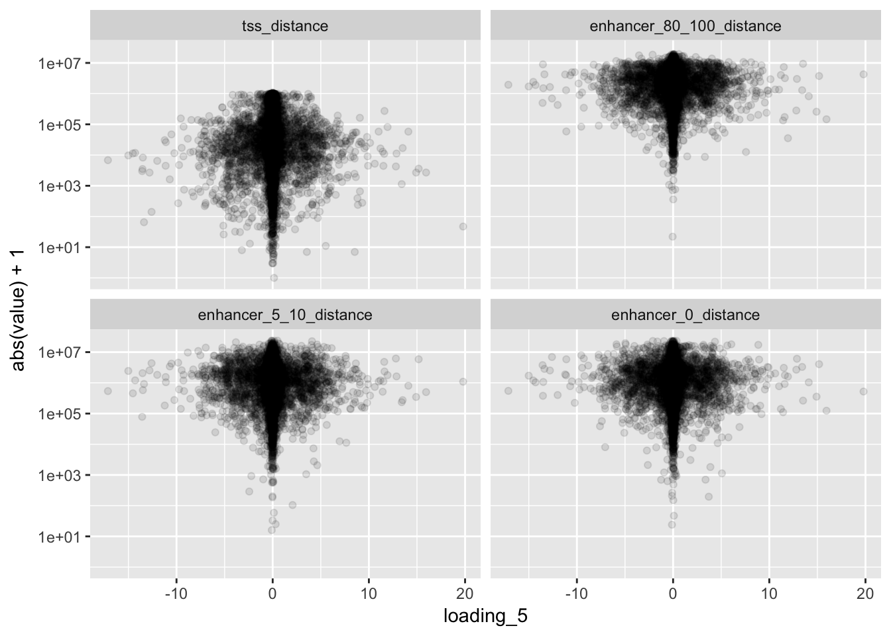
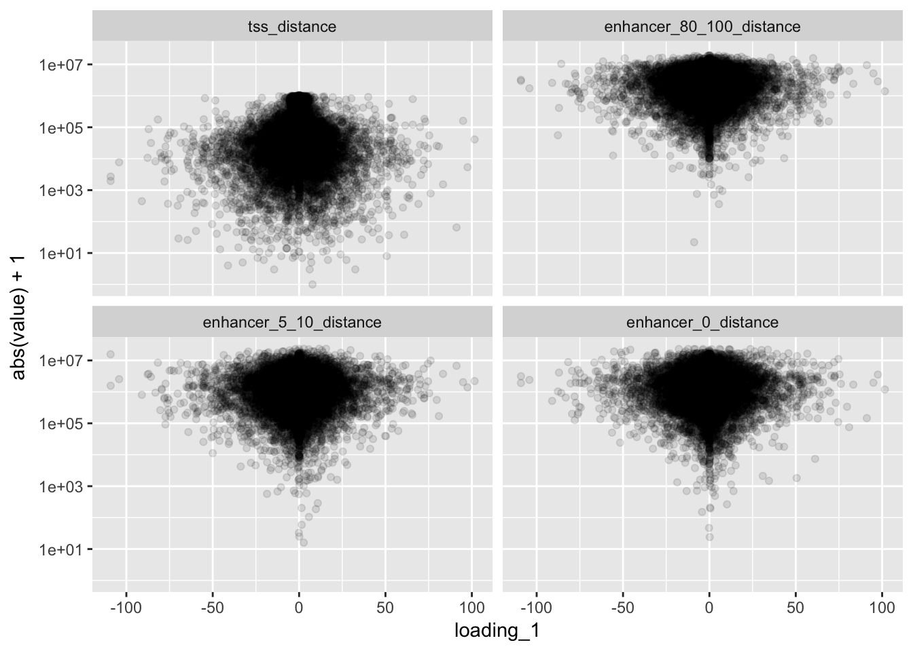
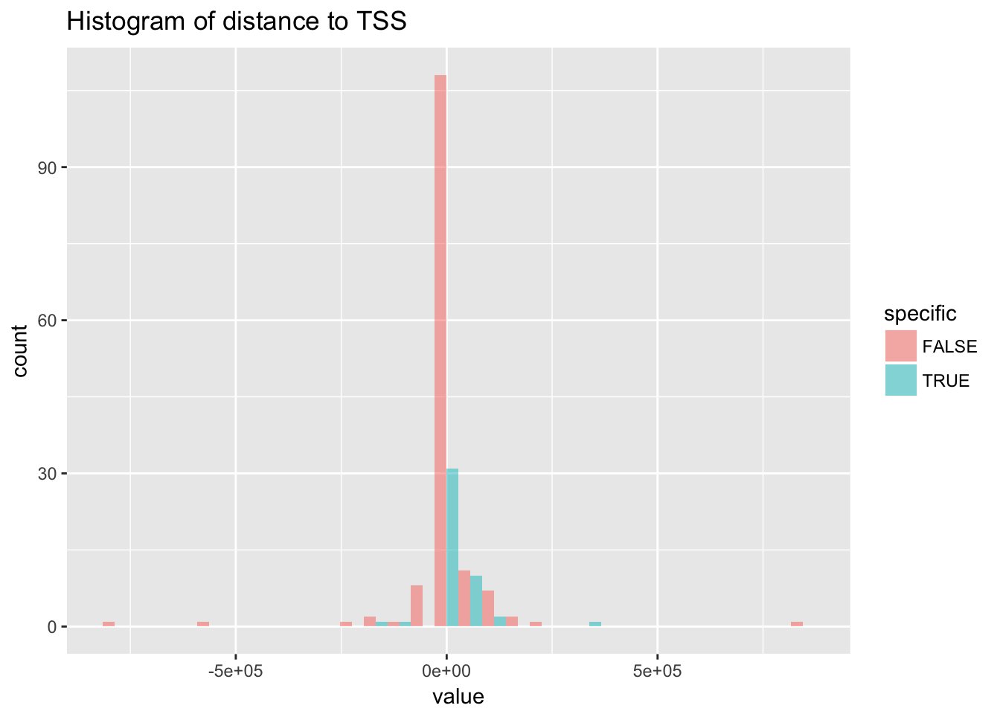

source('../scripts/mylib.R')
library(ggplot2)
library(mashr)
library(dplyr)
library(pander)
panderOptions('knitr.auto.asis', FALSE)
panderOptions('table.split.table', Inf)
set.seed(2018)This section is to explore the relationship between loading on “heart factor” and distance to heart active enhancer. Fantom enhancer is used. In particular, the heart enhancer is extracted using SlideBase Human Enhancer Selector where the extraction is restricted to heart with cutoffs 80-100%, 5-10%, 0% (i.e. the expression fraction across all tissue).
flash <- readRDS('../output/gtex_flash.rds')
eqtl_annotated <- read.table('../output/strong_eqtl_annotated.txt.gz', header = T)
eqtl_annotated.dup <- duplicated(eqtl_annotated$ensembl_gene_id)
eqtl_annotated <- eqtl_annotated[!eqtl_annotated.dup, ]
enhancer_80_100 <- read.table('../data/enhancer_data_fantom_heart_80_100.bed', sep = '\t')
enhancer_5_10 <- read.table('../data/enhancer_data_fantom_heart_5_10.bed', sep = '\t')
enhancer_0 <- read.table('../data/enhancer_data_fantom_heart_0.bed', sep = '\t')
nenhancer <- nrow(enhancer_80_100)
enhancer_5_10 <- enhancer_5_10[sample(1 : nrow(enhancer_5_10), nenhancer, replace = F), ]
enhancer_0 <- enhancer_0[sample(1 : nrow(enhancer_0), nenhancer, replace = F), ]l.five <- flash$EL[, 5]
l.one <- flash$EL[, 1]
l.five <- l.five[eqtl_annotated$idx]
l.one <- l.one[eqtl_annotated$idx]
eqtl_annotated$enhancer_80_100_distance <- getDistance(cbind(paste0('chr', eqtl_annotated$eqtl_chr), eqtl_annotated$eqtl_start), enhancer_80_100)
eqtl_annotated$enhancer_5_10_distance <- getDistance(cbind(paste0('chr', eqtl_annotated$eqtl_chr), eqtl_annotated$eqtl_start), enhancer_5_10)
eqtl_annotated$enhancer_0_distance <- getDistance(cbind(paste0('chr', eqtl_annotated$eqtl_chr), eqtl_annotated$eqtl_start), enhancer_0)
eqtl_annotated$loading_5 <- l.five
eqtl_annotated$loading_1 <- l.one
eqtl_annotated$tss_distance <- getDistanceToTSS(cbind(eqtl_annotated$eqtl_chr, eqtl_annotated$eqtl_start, eqtl_annotated$chromosome_name, eqtl_annotated$transcript_start, eqtl_annotated$transcript_end, eqtl_annotated$strand))
df <- eqtl_annotated[, c('tss_distance', 'enhancer_80_100_distance', 'enhancer_5_10_distance', 'enhancer_0_distance', 'loading_5', 'loading_1')]
df <- melt(df, id.vars = c('loading_5', 'loading_1'))
ggplot(df) + geom_point(aes(x = loading_5, y = abs(value) + 1), alpha = .1) + facet_wrap(~variable) + scale_y_log10()
ggplot(df) + geom_point(aes(x = loading_1, y = abs(value) + 1), alpha = .1) + facet_wrap(~variable) + scale_y_log10()
df.sub <- df[(abs(df$loading_5) > 5 & abs(df$loading_1) < 1) | (abs(df$loading_5) < 1 & abs(df$loading_1) > 50), ]
df.sub$specific <- TRUE
df.sub$specific[(abs(df.sub$loading_5) < 1 & abs(df.sub$loading_1) > 50)] <- FALSE
ggplot(df.sub[df.sub$variable == 'tss_distance', ]) + geom_histogram(aes(x = value, fill = specific), alpha = .5, position = 'dodge') + ggtitle('Histogram of distance to TSS')## `stat_bin()` using `bins = 30`. Pick better value with `binwidth`.
It seems that strong loading on “heart factor” does not correspond to closer distance to fantom expressed enhancer in heart. Also, eQTLs with strong loading on “heart factor” do not show trend to be further away from TSS comparing to eQTLs with strong loading on factor 1 (universal effect). The possibly explanations are: